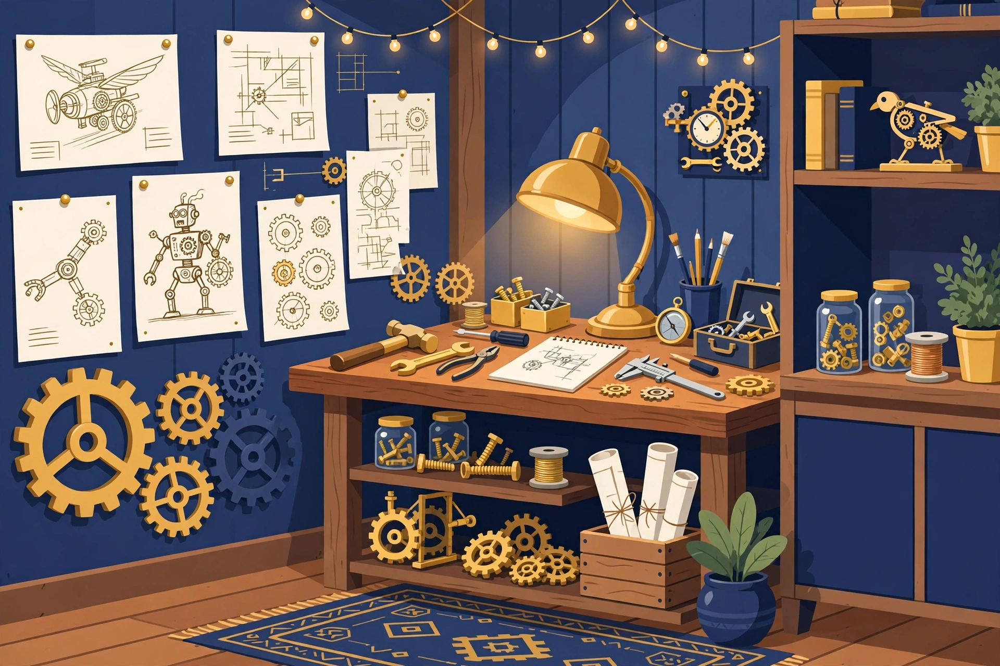

Welcome to the Inventor's Workshop — blueprints on the wall, gears on the bench, and every idea filed in its proper drawer.
Meet Patty the Patent Scroll, the mascot of this world.
The Globally Rejustered Patent Catalog is an open, growing catalog of public patent records, harvested from Google Patents across five classification areas, with working Python code that demonstrates the ideas behind them.
Two working tools, right here on the page. Each one says what it does and what it cannot do. Neither tool reaches the live web, and neither one needs a key.
Enter a class code to get its name and section, from the catalog’s own class list.
Class code:
Enter a grant year to get the age of the patent in years, counted to 2026.
Grant year:
Designs, printables, and demos — free, downloadable, usable on the page. Every product is labeled Signature or Fun. Nothing here is for sale.
A printable sheet for sketching an invention: a box for the drawing, lines for the title, the class, and the problem it solves.
Making: print the printable file, sketch the invention in the box, and file the sheet by its class code.
A poster of the workshop wall: blueprints, gears, and the brass lamp, drawn in the Inventor’s Workshop style.
Making: print the printable file and pin it up. The gears and sketches on it are drawings, not working parts.
A paper ornament: a gear wheel with a small scroll, to stand on a desk.
Making: print the printable file on card, cut out the gear and the scroll, fold along the marked lines, and glue the tabs. No printer? Draw the gear by hand from the measurements on the sheet.
Download all product lines as a printable (text)
Patty the Patent Scroll once filed a patent for a better way to file patents. The filing cabinet filed it under "very good, try again". (Fun — a made-up tale, not a record.)